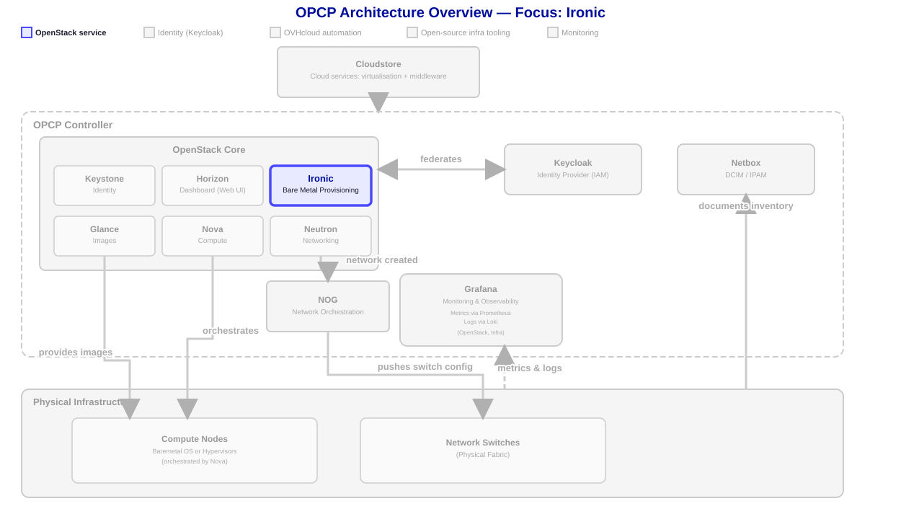
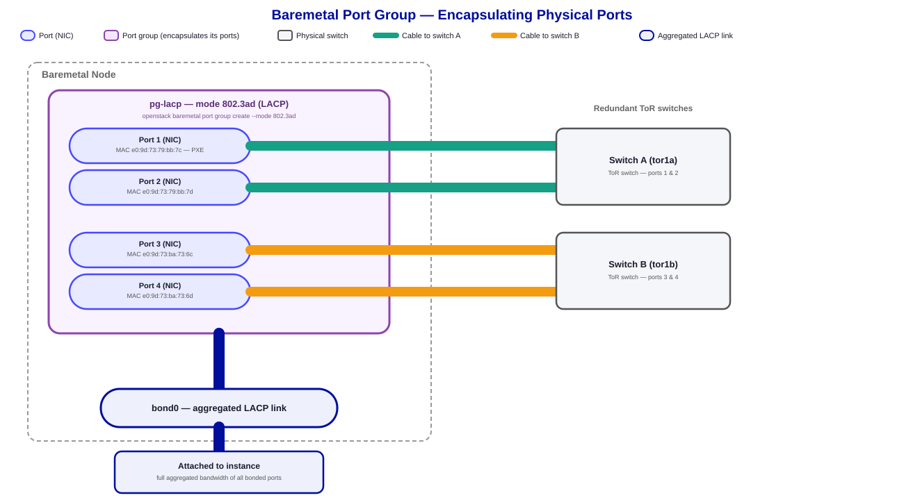

Annexe - Configuration LACP
Le protocole LACP (Link Aggregation Control Protocol) permet de regrouper plusieurs interfaces réseau physiques en un seul lien logique, offrant une bande passante accrue et de la redondance. Dans cette leçon, vous allez configurer des bonds LACP sur OpenStack via l'API Neutron.

Objectif
La configuration de LACP doit être appliquée sur le nœud avant de déployer une instance, afin que les interfaces réseau soient correctement agrégées.
Ce guide explique comment configurer un nœud (serveur physique) dans OPCP pour activer LACP (Link Aggregation Control Protocol).
Nous verrons également comment configurer le bonding (association logique de plusieurs interfaces réseau pour former une seule interface virtuelle) au niveau de votre instance, afin de tirer pleinement parti du LACP.

Il est recommandé de configurer LACP avant le déploiement d’une instance. Ce guide ne couvre pas la configuration d'un nœud déjà en production.
Pourquoi utiliser LACP ?
LACP peut être utilisé dans deux cas d'usage précis :
- Augmenter la capacité réseau : En agrégeant plusieurs cartes réseau, vous pourrez ajouter la bande passante de chaque carte réseau ajoutée à cet agrégat, pour les mêmes réseaux.
- Augmenter la résilience : Chaque serveur de OPCP bénéficie de 4 interfaces 25G. Chaque serveur est relié à deux switchs réseau (A&B) pour assurer la résilience en cas de panne matérielle de l'un d'entre eux. LACP permet de créer des interfaces virtuelles résilientes en cas de panne matérielle en aggrégant deux cartes réseau reliées sur des switchs distincts.
Prérequis
Avant de commencer, assurez-vous de disposer des éléments suivants :
- Disposer d'un service OPCP actif.
- Un accès [OpenStack CLI configuré] avec les droits nécessaires (clouds.yaml ou variables d’environnement).
- Le rôle admin et/ou des nœuds transférés dans votre projet.
LACP est une configuration réseau spécifique, nécessitant des connaissances réseau et système avancées. Nous vous conseillons d'appliquer ce guide si vous connaissez déjà l'un ou plusieurs des concepts suivants : configuration de nœuds au sein de OpenStack Ironic, gestion des ports au sein de OpenStack Neutron, et la connaissance de la CLI OpenStack.
En pratique
Configuration du nœud
1. Lister les nœuds
La liste des nœuds disponibles dans votre projet peut être affichée avec la commande suivante :
openstack baremetal node listExemple de sortie :
+--------------------------------------+----------------+--------------------------------------+-------------+--------------------+-------------+
| UUID | Name | Instance UUID | Power State | Provisioning State | Maintenance |
+--------------------------------------+----------------+--------------------------------------+-------------+--------------------+-------------+
| 88830859-5b16-4935-8f41-d381b754cbe5 | SERVER-1 | None | power off | available | False |
| 726bb7e9-3b20-4a44-99d7-2af747983781 | SERVER-2 | None | power off | available | False |
| af711edf-a579-491e-b474-3c03639ed99b | SERVER-3 | 83b7083b-bbdd-4327-941c-ee91197818c5 | None | active | True |
+--------------------------------------+----------------+--------------------------------------+-------------+--------------------+-------------+Choisissez un nœud qui n'a pas d'« Instance UUID » (la valeur est None), « State de provisionning » est « available » et « Maintenance » est False.
2. Transférer la propriété d’un nœud (admin uniquement)
Un admin peut transférer la propriété d’un nœud à un projet donné :
openstack baremetal node set <node-id> --owner <project-id>3. Lister les ports réseau
Chaque carte réseau physique, appelée Network Interface Card (NIC), d’un nœud est représentée dans OpenStack par un port.
Pour afficher la liste des ports associés à un nœud :
openstack baremetal port list --node <node-id>Exemple de sortie :
+--------------------------------------+-------------------+
| UUID | Address |
+--------------------------------------+-------------------+
| 068a06b2-ebf9-48c9-a3c3-94016ca5e3da | 85:32:f2:87:29:da |
| 4937d704-7517-4525-86d1-abecb94a7ce9 | 85:32:f2:87:29:db |
| 422eece6-dcfa-40cd-975d-ba8bb11c774e | 85:32:f2:89:66:f8 |
| 34073903-92ad-47d1-a751-15aa96991415 | 85:32:f2:89:66:f9 |
+--------------------------------------+-------------------+Pour visualiser les détails d'un port, y compris les informations sur la connexion physique. Cela est particulièrement utile si vous souhaitez configurer un bonding LACP 2x2, en répartissant les NIC sur deux switches différents pour assurer une meilleure redondance et tolérance aux pannes.
openstack baremetal port show <port-id>Exemple de sortie :
+-----------------------+------------------------------------------------------------------------------------------------+
| Field | Value |
+-----------------------+------------------------------------------------------------------------------------------------+
| address | 85:32:f2:89:66:f9 |
| created_at | 2025-01-06T10:43:38.020574+00:00 |
| extra | {} |
| internal_info | {} |
| is_smartnic | False |
| local_link_connection | {'switch_id': 'c0:00:15:8c:33:78', 'port_id': 'Ethernet25/2', 'switch_info': 'demo-tor1b-a70'} |
| node_uuid | ddc7c763-74fc-4900-b9e6-5463233836b0 |
| physical_network | None |
| portgroup_uuid | c3d3fcb3-7a92-4257-b944-736d222e8c4a |
| pxe_enabled | False |
| updated_at | 2025-11-06T09:52:46.355883+00:00 |
| uuid | 71899d54-546d-4fdd-8d8b-52ad986bf425 |
+-----------------------+------------------------------------------------------------------------------------------------+4. Activer le mode maintenance
Avant toute modification de configuration réseau, le nœud doit être placé en mode maintenance. Cela assure que ce nœud ne puisse pas être déployé durant toute l'opération :
openstack baremetal node maintenance set <node-id>5. Créer un groupe de ports (LACP Bond)
Le groupe de ports permet d’activer l’agrégation LACP entre plusieurs interfaces réseau.
- un groupe de ports unique pour un bond 1×4, ou
- deux groupes de ports pour des bonds 2×2.
Utilisez le paramètre --mode 802.3ad pour activer LACP.
Le paramètre --address <MAC> ne doit PAS être égal à l'adresse MAC du port PXE s'il est utilisé. Sinon, vous pouvez omettre le paramètre ou définir la valeur MAC à partir de l'une des interfaces physiques que vous utiliserez.
Vous pouvez lister tous les ports avec openstack baremetal port list --node <node-id> --long et vérifier si PXE est utilisé ou non.
Remarque : il est recommandé de préfixer le nom du groupe de ports avec le nom du nœud (ex. : <node-name>-<name>) pour faciliter l'identification.
Exemple :
openstack baremetal port group create \
--node <node_uuid> \
--name node_name-pg-lacp \
--mode 802.3ad \
--address 00:00:00:20:00:01Exemple de sortie :
+----------------------------+-------------------------------------------+
| Champ | Valeur |
+----------------------------+-------------------------------------------+
| uuid | d082c2ab-5960-44e3-920d-3d6dfb6811e9 |
| address | 00:00:00:20:00:01 |
| node_uuid | 88830859-5b16-4935-8f41-d381b754cbe5 |
| name | node_name-pg-lacp |
| mode | 802.3ad |
| standalone_ports_supported | True |
+----------------------------+-------------------------------------------+6. Associer les ports au groupe
Chaque port du nœud doit être associé au groupe de ports créé :
openstack baremetal port set --port-group `<port-group-id>` `<port-id>`Exemple :
openstack baremetal port set --port-group d082c2ab-5960-44e3-920d-3d6dfb6811e9 068a06b2-ebf9-48c9-a3c3-94016ca5e3da
openstack baremetal port set --port-group d082c2ab-5960-44e3-920d-3d6dfb6811e9 4937d704-7517-4525-86d1-abecb94a7ce9
openstack baremetal port set --port-group d082c2ab-5960-44e3-920d-3d6dfb6811e9 422eece6-dcfa-40cd-975d-ba8bb11c774e
openstack baremetal port set --port-group d082c2ab-5960-44e3-920d-3d6dfb6811e9 34073903-92ad-47d1-a751-15aa969914157. Désactiver le mode maintenance
Une fois la configuration terminée, désactivez le mode maintenance :
openstack baremetal node maintenance unset `<node-id>`8. Créer une instance
Une fois le LACP configuré, vous pouvez déployer le nœud sur le serveur :
openstack server create \
--image <image-name> \
--flavor <flavor-id> \
--key-name <keypair-name> \
--nic net-id=<network-id> \
--availability-zone "nova::<node-id>" \
<instance-name>Pour vous assurer que votre instance est déployée sur le nœud configuré avec LACP, utilisez la zone de disponibilité nova::<node-id>.
Résumé des étapes
| Étape | Action | Commande |
|---|---|---|
| 1 | Transférer la propriété | openstack baremetal node set <node-id> --owner <tenant-id> |
| 2 | Lister les ports | openstack baremetal port list --node <node-id> |
| 3 | Activer le mode maintenance | openstack baremetal node maintenance set <node-id> |
| 4 | Créer un groupe LACP | openstack baremetal port group create --node <node-id> --name <port-group-name> --mode 802.3ad |
| 5 | Associer les ports | openstack baremetal port set --port-group <port-group-id> <port-id> |
| 6 | Désactiver le mode maintenance | openstack baremetal node maintenance unset <node-id> |
| 7 | Créer une instance | openstack server create --image <image-name> --nic net-id=<network-1> --flavor <flavor-id> --key-name <keypair-name> --availability-zone "nova::<node-id>" <instance-name> |
Configuration du bonding au niveau OS
Après avoir configuré votre nœud dans OpenStack et déployé un système d'exploitation, il reste à configurer le réseau afin de bénéficier du réseau bonding, qui permet d'agréger plusieurs interfaces réseau pour plus de performance et de redondance.
Vérifier la configuration du bonding
Sur certaines images (comme Debian 12 ou Ubuntu 22.04), la configuration du bonding est automatiquement détectée et configurée.
Cependant, d'autres distributions peuvent nécessiter un ajustement manuel.
1. Vérifier les bonds actifs
ls /proc/net/bonding/
bond02. Vérifier les interfaces membres
cat /proc/net/bonding/bond0 | grep Interface
Slave Interface: ens22f1np1
Slave Interface: ens22f0np0
Slave Interface: ens21f1np1
Slave Interface: ens21f0np03. Vérifier la politique de hachage (Transmit Hash Policy)
cat /proc/net/bonding/* | grep Trans
Transmit Hash Policy: layer2 (0)layer3+4 (par défaut, certains OS utilisent layer2, moins performante).
Plus de détails : Documentation Ubuntu Bonding
Modifier la configuration
1. Changement à chaud (non persistant)
Si vous souhaitez tester votre configuration manuellement, vous pouvez utiliser la commande suivante :
sudo ip link set bond0 type bond xmit_hash_policy layer3+4Attention, cette configuration sera réinitialisée si votre machine redémarre.
2. Changement persistant (exemple via Netplan et cloud-init)
Créez votre fichier de configuration (ex. /etc/cloud/cloud.cfg.d/99-custom-network.cfg) pour y inclure :
network:
version: 2
ethernets:
ens21f0np0: {}
ens21f1np1: {}
ens22f0np0: {}
ens22f1np1: {}
bonds:
bond0:
dhcp4: true
interfaces:
- ens21f0np0
- ens21f1np1
- ens22f0np0
- ens22f1np1
macaddress: 00:00:00:20:00:23
parameters:
mode: 802.3ad
transmit-hash-policy: layer3+4
lacp-rate: fast
mii-monitor-interval: 100Puis appliquez la configuration en rédémarrant l'instance.
Tester la bande passante avec iperf3
Pour tester correctement LACP, vous devez disposer de 2 nœuds dans le même réseau, tous deux configurés avec LACP.
Serveur Iperf3 (nœud 1)
iperf3 -sClient Iperf3 (nœud 2)
Utilisez -P pour générer plusieurs flux parallèles, afin d’atteindre la bande passante maximale.
iperf3 -c <ip-du-nœud> -P 64Exemple de résultat
[SUM] 0.0000-10.0121 sec 110 GBytes 94.0 Gbits/secAvec un lien 4×25 Gbps, vous devriez atteindre environ 100 Gbps. Il peux être nécessaire d'ajuster certains paramètres système pour exploiter pleinement cette capacité.
Conclusion
Vous avez configuré :
- Le LACP (802.3ad) au niveau du nœud Baremetal OpenStack ;
- Le paramétrage du bonding dans l’OS invité ;
- Et validé la performance réseau via
iperf3.
Votre instance est désormais prête à exploiter toute la bande passante disponible du lien agrégé.
Résumé
- Le LACP (802.3ad) agrège plusieurs ports en un seul lien logique.